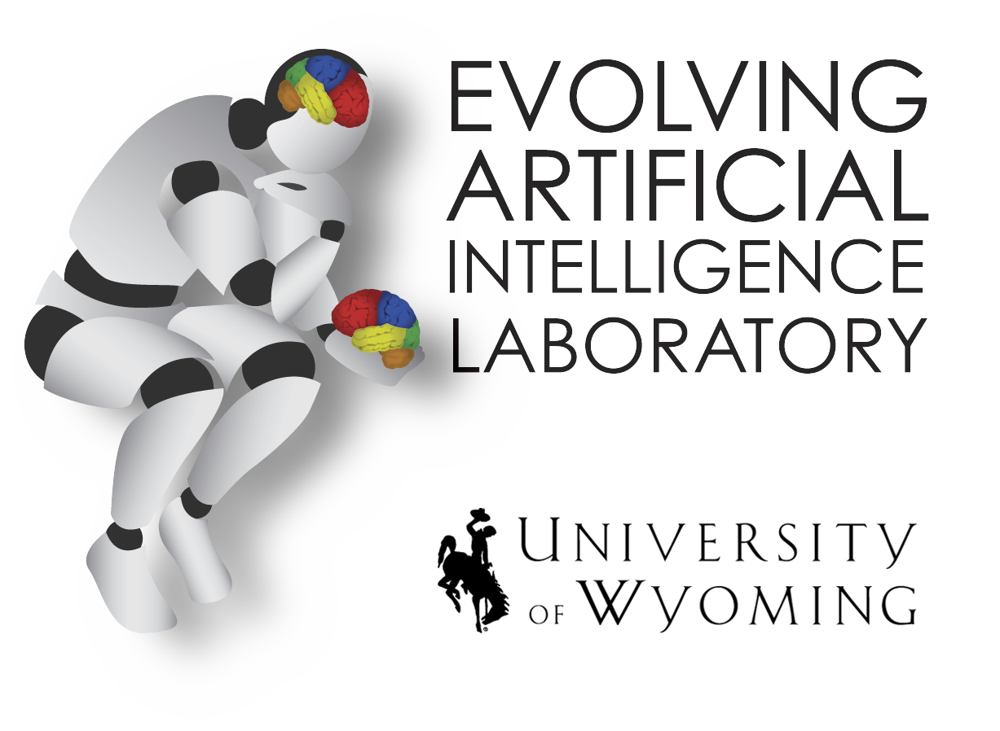
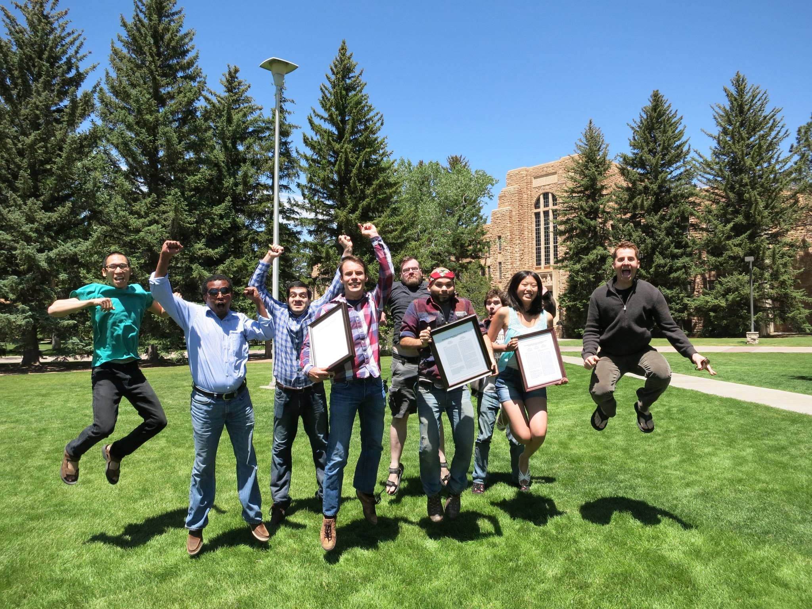
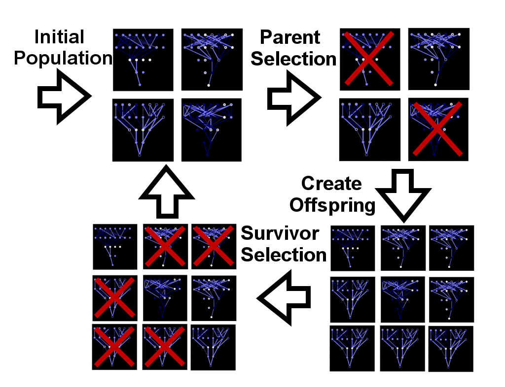

Joost Huizinga
Research Scientist at OpenAI Research
ResearchI am a research scientist at Uber AI. As part of Uber AI, I have helped in developing Go-Explore, an exploration-focussed algorithm capable of solving many hard-exploration problems, including the famous Atari benchmarks of Montezuma's Revenge and Pitfall. Before that I was a PhD student at the Evolving AI lab, where I studied the emergence of structural organization in evolved neural networks.
The Evolving Artificial Intelligence Laboratory
 I did my PhD at the Evolving Artificial Intelligence Laboratory, created by dr. Jeff Clune, and home to fundamental AI research aimed at increasing our understanding of intelligence and evolution. Within the framework of evolutionary algorithms, I have studied the emergence of structural organization such as modularity, regularity and hierarchy, examined canalization in online generated images, and developed an algorithm able to solve multi-modal problems by preserving stepping stones.

Evolving Artificial Intelligence
My research at the Evolving Artificial Intelligence Lab was based on Evolutionary Algorithms. Evolutionary algorithms start with a set of randomly generated individuals, such as robot controllers. These individuals are then tested on the task that needs to be solved, such as locomoting a robot. Those individuals that perform better than their colleagues are allowed to produce offspring. The offspring is either a combination of two parents or a clone of the parent to which we then apply some minor mutations. The idea is that the minor change might improve the individuals performance making it better than its parents and thus, very slowly, helping the evolutionary process solve the task. In the last step, the evolutionary algorithm selects the next generation from among both parents and children based on their performance such that the total population size stays the same. From there the process repeats, generation after generation, until the problem is solved or until some predetermined number of generations is reached. 